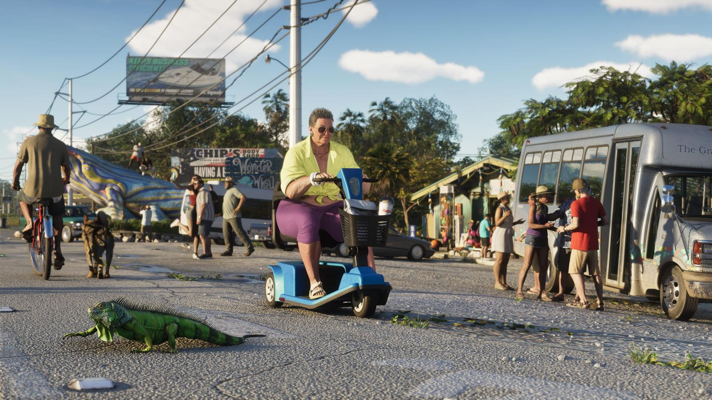

Отсылки и детали в трейлерах GTA 6
Обновлено:

Коротко
- Вайс-Сити вернулся в серию впервые с 2006 года.
- В биографии Лусии упомянут Либерти-Сити — город из GTA 3 и GTA 4.
- Трейлер 1 пародирует вирусные ролики из Флориды.
- Чит-коды и секреты — после релиза.
Возвращение Вайс-Сити
Вайс-Сити уже был в серии — в GTA Vice City (2002) и Vice City Stories (2006). В GTA 6 это современный город, а не Майами 80-х.
Либерти-Сити
В официальной биографии Лусии сказано, что её мать мечтала о хорошей жизни ещё со времён Либерти-Сити — города из GTA 3 и GTA 4.
«Флоридский» интернет
Первый трейлер собран из сцен, снятых как ролики для соцсетей. Крупные издания отмечали, что многие из них пародируют реальные вирусные видео из Флориды.
Музыка
В первом трейлере звучит «Love Is a Long Road» Тома Петти, во втором — «Hot Together» The Pointer Sisters. Подробнее — Трейлеры GTA 6: что показали.
Источники: Rockstar Games — официальный сайт GTA VI (rockstargames.com/VI), Rockstar Newswire; обзоры трейлеров крупных изданий.